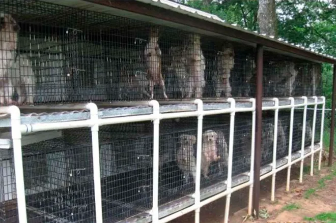

Puppy mills are commercial facilities whose sole purpose is to breed dogs for sale. Dogs are kept in overcrowded, unsanitary conditions, often in cages that are too small for them to move around. They are bred constantly until they can no longer produce puppies, at which point they are often abandoned or killed. The puppies are sold to pet stores or directly to individuals, who may not be aware of the unethical practices involved. The individuals profiting off of these sales have no regard for the health of the dogs that are held captive there, as well as the ones being sold. The conditions can lead to sickness, malnutrition, and even death. The puppies are also subject to these sicknesses, and often have genetic issues that can lead to a life of pain for the dog, as well as high vet bills for the new owners.
Backyard breeders are individuals who breed dogs without the necessary education, experience, or facilities to do so responsibly. Like puppy mills, profit is often the focus of the breeders, rather than the health and well-being of the dogs. With no real knwowledge of breeding practices, these individuals often breed dogs that are not healthy. They may not be aware of the genetic issues that can arise from breeding two dogs. Another way these dogs may end up in the shelters is due to the fact that along with he health and genetic issues, puppies are also subject to behavioral issues. This may lead to the new owners giving the dog away to a shelter or abandoning them.
The problem not only lies with the breeding practices, but also with the fact that these dogs often end up at the shelters, which are already overcrowded. People may not realize how many dogs are sent to kill shelters, typically older dogs who have a hard time being adopted.
